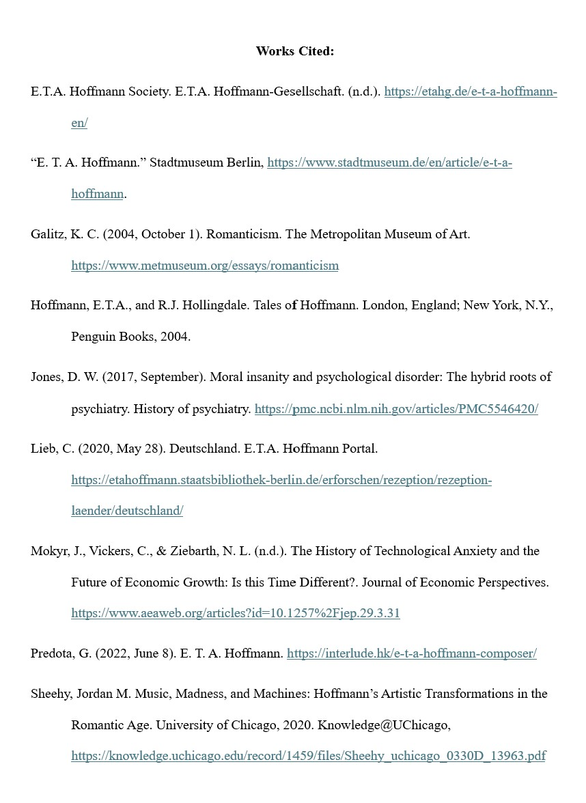
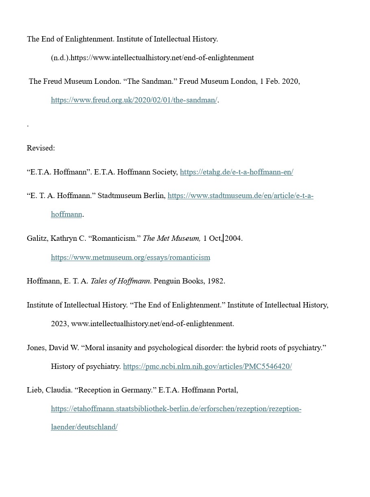
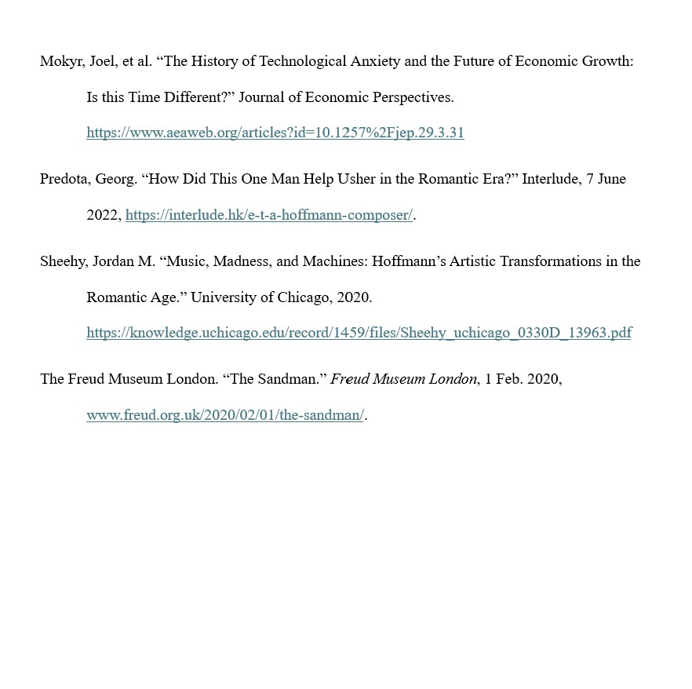

Through the Lens: A View on Human Relationships
Literary Analysis
Biography
Home
Sources
Game!
Literary Analysis Sources
Romanticism Overview
Technological Anxiety
THe Sandman Book
Historical Context Sources
End of Enlightenment
Romanticism Overview
Hoffmann Reception
Oldstyle Tales on Hoffmann
Technological Anxiety
Moral Insanity & Psychiatry
MLA Citations



Download Full Citations Doc Here: